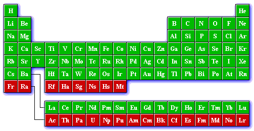

PAW atomic datasets
On this page you can find files containing PAW atomic datasets for ABINIT and tools to produce your own.
Although the PAW atomic datasets present on this page have been carefully tested, they are provided without warranty.
Users should test them adequately before using them in their applications.
JTH PAW atomic datasets table
The atomic datasets files are provided in XML format according to
PAW-XML specifications,
allowing sharing them among multiple codes. ABINIT can read them from version 7.6.
Please consult (and cite) this
paper
(Computer Physics Communications 185, 1246 (2014))
for full details on the design criteria and testing procedure.
Clicking on a green cell in the periodic table will bring you into a directory
corresponding to the selected chemical element.
The size of a dataset file may vary between 500 kB and 1 MB.


Current version of the library : JTH - $${JTH_TABLE_VERSION}
Quality indicator (comparison to all-electron data using
delta package v3.1):
Δ-value=$${JTH_TABLE_DELTA_VALUE} meV,
Δ1-value=$${JTH_TABLE_DELTA1_VALUE} meV
Download the entire dataset table:
Documents and tools
-
Consult these notes
for full details on the JTH v1.1 PAW atomic dataset library validation results.
-
The JTH atomic datasets library has been tested by means of the
Delta calculation package
provided by the CMM group of Ghent University.
Δ-value is defined as the root-mean-square energy difference between the equations of state of two codes,
averaged over all crystals in a purely elemental benchmark set. On the corresponding
webpage,
several pseudopotential/PAW codes and dataset libraries are compared with
all-electron results performed with the
Wien2K code.
See also this paper
(Science 351 (6280) (2016)) --- and especially the
supplementary material
--- giving details about the JTH table parameters.
-
For each PBE atomic dataset in the JTH library (above), the delta-value is provided
(relative to
Wien2K results).
The JTH atomic data have also been confronted to the
GBRV dataset library
using part of the benchmark set provided on its
web site.
Full details on these comparisons are given in the notes.
-
Abinit2XML
: A small tool to convert PAW atomic datasets in ABINIT proprietary format
into XML-formatted datasets (following the
PAW-XML specifications)
-
Some other public libraries of PAW atomic datasets (readable by ABINIT) are available:
ATOMPAW,
GPAW,
GBRV,
Vlab,
APAWlib
These datasets should be tested carefully before use in ABINIT.
Release notes, older versions of the datasets
-
March 12, 2018
JTH version 1.1 is available. Compared to v1.0 version, the following changes have been made:
- The datasets of the following species have been slightly changed: H, Li, Si, Cu, Zn, Ga, Cd, Sb, Lu, Os, Ir and Bi.
These changed have been made to improve numerical stability
(instability was generally due to big ratios between the amplitude of projectors and the amplitude of wavefunctions).
The delta calculation
package v3.1 has been used to validate these new atomic datasets against AE references.
Following GBRV test suite,
we have calculated the structural parameters for fcc, bcc, rocksalt,
perovskite, half-heusler and zinc-blende structures. All results can be found in these
notes.
These results are very similar to those of the JTH-v1.0 table.
We obtain the mean values (plane-wave cut-off: 20 Ha): Δ=0.44 meV, Δ1=1.03 meV.
Authors: F. Jollet, M. Torrent (CEA-Bruyères-le-Chatel).
-
March 30, 2016
JTH version 1.0 is available. Compared with the v0.2, the following changes have been made:
- Coefficients used to compute the Fock operator (needed for hybrid functionals) have
been added in each dataset (following
PAW-XML
specifications).
- The radius of the compensation charge has been slightly modified for the following elements
(to have it strictly lesser the the PAW radius):
As, Ar, Mg, Mo, Nb, Os, Ba, Sc, Sr, Ta, Y, Ca, Na, Li, Be, C,
Ru, Ne, N, Ag, W, Ga, and Ir.
- Semi-core states have been added for In, Sn, Ge, Tl, Pb, Bi and Sb.
The delta calculation
package v3.0 has been used to validate these new atomic datasets against AE references.
Following GBRV test suite,
we have calculated the structural parameters for fcc, bcc, rocksalt,
perovskite, half-heusler and zinc-blende structures and compared
them to AE references. The agreement is good.
All results can be found in these notes.
Authors: F. Jollet, M. Torrent (CEA-Bruyères-le-Chatel).
-
September 15, 2014
JTH version 0.2
is available. With respect to v0.1, several datasets have been
updated, taking into account the comparisons done by the
GBRV group.
In addition to
Delta calculations
(version 0.3 with new all-electron references),
all fcc and bcc structures have been compared to all-electron results.
Some datasets have also been improved in order to better reproduce magnetic properties of their oxides.
The datasets are provided in the updated XML format. The
PAW-XML
specifications have been slightly improved following a CECAM meeting organized in Paris in January 2014.
Authors: F. Jollet, M. Torrent (CEA-Bruyères-le-Chatel).
-
September 26, 2013
JTH version 0.1
is available. Full details on this first official version of the JTH library
are given in this Computer Physics Communications
paper,
including design procedure, theoretical background and testing thanks to the
Delta package.
Note that this is the first ABINIT PAW library published in the
PAW-XML format.
Authors: F. Jollet, M. Torrent (CEA-Bruyères-le-Chatel), N. Holzwarth (Wake Forest University).
-
July 1, 2009
This
2009 version of the PAW dataset table
has been completely redesigned: instead of multiple tables
corresponding to several generators, only one table is provided.
Links to datasets from
ATOMPAW
table are also provided.
Contribution from M. Torrent (CEA-Bruyères-le-Chatel).
-
September 3, 2007
New version of the
ABINIT PAW dataset library,
including a new "CONTRIB" section: PAW atomic datasets
generated by experienced ABINIT users are now provided.
This new library of external contributions has been generated by
J. Zwanziger
(Dalhousie University) and A. Jacques (UCL).
-
December 22, 2006
Some PAW datasets have been added to the "recommended" table.
Contributions from CEA-Bruyères-le-Chatel group.
-
September 14, 2005
A brand new set of PAW atomic data is published, using improved versions of the Atompaw2Abinit
and USPP2Abinit generators. Now these tools are mature and can produce reference data.
Authors: M. Torrent, F. Jollet (CEA-Bruyères-le-Chatel).
-
October 10, 2003
The very first version of the
ABINIT PAW dataset library;
only few atomic species are available.
The Atompaw2Abinit and USPP2Abinit tools are officially published thanks to a fruitful
collaboration with N. Holzwarth
and D. Vanderbilt.
All datasets have been generated by M. Torrent, F. Jollet and F. Bottin (CEA-Bruyères-le-Chatel).
Last modification: march 30, 2016
Webmaster (this page): M. Torrent